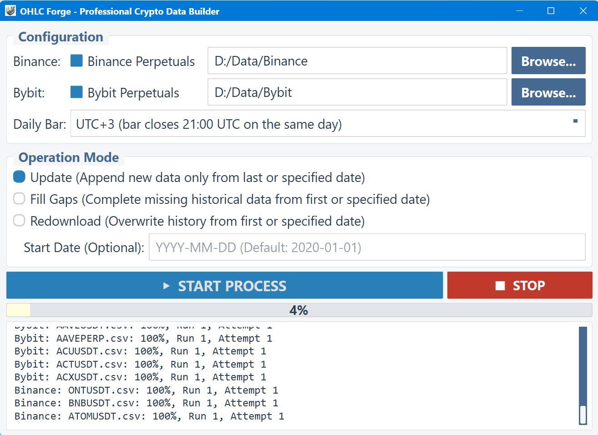
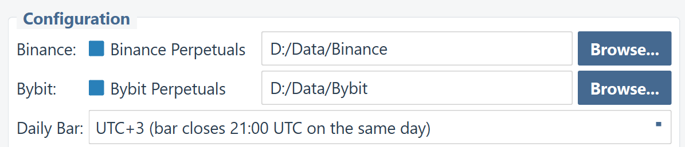
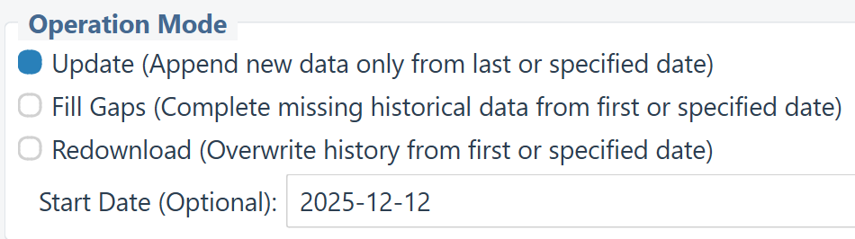
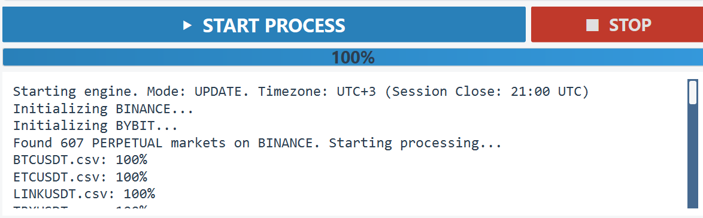
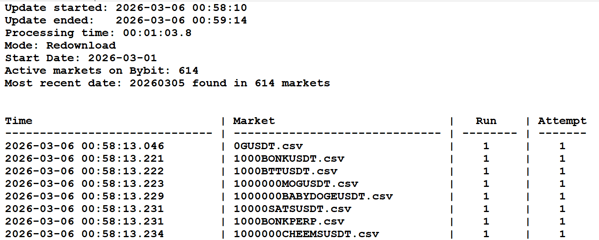
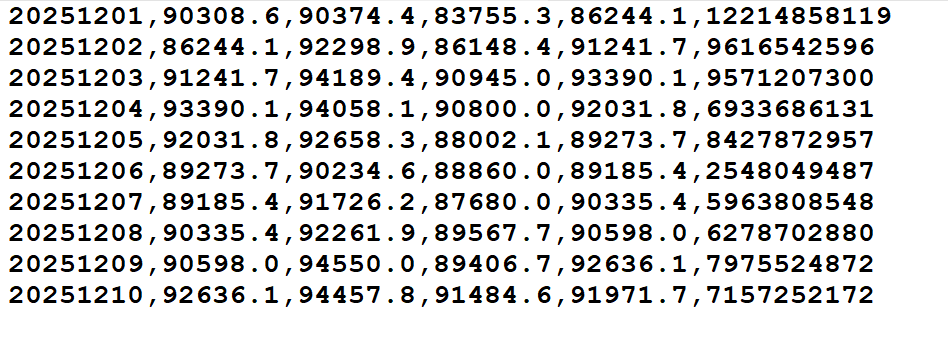
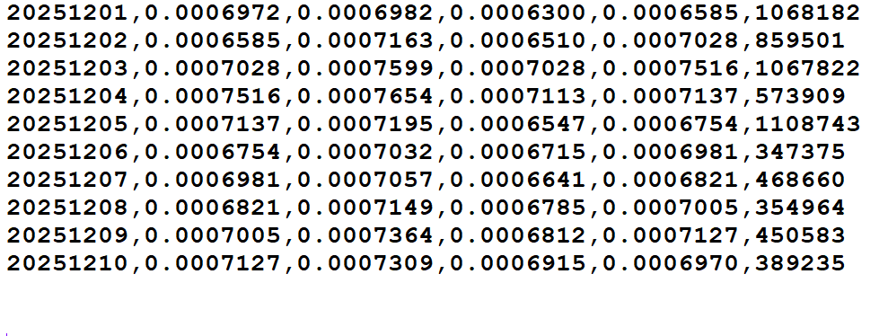
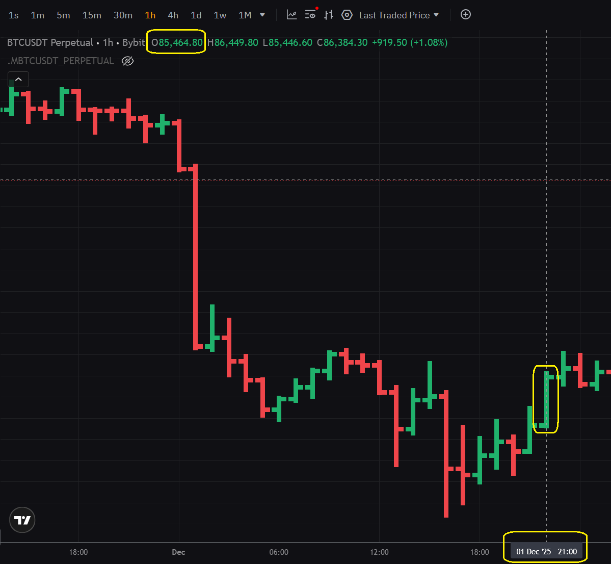
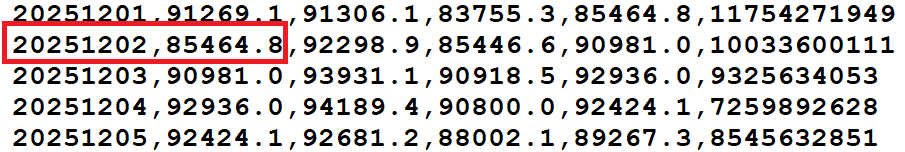

OHLC Forge PRO
Daily Bars for Crypto Perpetuals in Your Time Zone
Daily Bars for Crypto Perpetuals in Your Time Zone
OHLC Forge PRO is a professional-grade application designed specifically for systematic cryptocurrency traders who need historical daily OHLCV (Open, High, Low, Close, Volume) data with custom daily bar closing times.
Most cryptocurrency exchanges close their daily candles at 00:00 UTC. This is an international standard, but it creates a real problem for systematic traders who need to update their data and place orders every day.
Daily bar closes at midnight UTC
For most traders, this means staying up late at night or waking up in the middle of the night to update data and place orders.
Daily bar closes at your chosen time
Update your data, place your orders, and go to bed at a reasonable hour. Same trading system, same logic, better lifestyle.
OHLC Forge PRO is a professional tool that requires a valid licence to operate. The activation process is quick and designed to protect your purchase while providing flexibility.
Once activated, a small file named licence_data.json is created.
Launch_OHLC_Forge_PRO.exe file in the main folder to start the application.licence_data.json is stored inside the OHLC_Forge_Pro subfolder.OHLC_Forge_PRO.exe inside the OHLC_Forge_Pro subfolder).Launch_OHLC_Forge_PRO.exe without the OHLC_Forge_Pro subfolder and its contents.OHLC Forge PRO features a clean, professional graphical interface designed for ease of use. The application automatically adapts to your screen resolution and DPI settings.

Figure 1: The OHLC Forge PRO interface showing independent folders for each exchange
The interface is divided into four main areas:

Figure 2: The Configuration panel with independent folder selection for each exchange
Select which exchanges to download data from:
Downloads all USD-margined perpetual futures contracts from Binance. This typically includes 600+ trading pairs.
Output subfolder: /Binance/
File naming: BTCUSDT.csv, ETHUSDT.csv, etc.
Downloads all USDT-margined linear perpetual contracts from Bybit. This typically includes 600+ trading pairs.
Output subfolder: /Bybit/
File naming: BTCUSDT.csv, ETHUSDT.csv, etc.
Each exchange has its own independent Data Folder path. This allows you to store Binance and Bybit data on different drives or in specific project directories.
OHLC Forge PRO includes a safety check: Binance and Bybit must use different destination folders.
This prevents files with the same name (like BTCUSDT.csv) from overwriting each other or causing data corruption.
This is the most important setting. It determines when your daily bars close. The dropdown offers 41 options from UTC−20 to UTC+20.
Each option shows:
UTC+3)bar closes 21:00 UTC)
Same day: The bar labelled "15/01/2025" closes at the specified UTC time
on 15 January.
Next day: The bar labelled "15/01/2025" closes at the specified UTC time
on 16 January (i.e., the session ends on the next calendar day).
This matches how traditional markets handle overnight sessions.

Figure 3: The Operation Mode panel with three mode options and the optional start date field
OHLC Forge PRO offers three distinct operation modes to suit different scenarios:
Best for: Daily/weekly routine updates
What it does: Looks at each existing CSV file, finds the last date, and downloads
only the missing days after that date.
Data handling: Existing data is preserved; new data is appended to the end of each
file.
Best for: Fixing incomplete data, recovering from interrupted downloads
What it does: Scans each file for any missing dates within the data range,
downloads only those missing days, and then sorts the file chronologically.
Data handling: Existing data is preserved; missing days are inserted and the file
is re-sorted.
Best for: Complete rebuilds, changing time zone settings, fixing corrupted data
What it does: Deletes all data from the specified "Start Date" onwards, then
re-downloads everything from that date.
Data handling: Data before the start date is preserved; data from the start date
onwards is replaced.
The "Start Date" field is used differently depending on the mode:
| Mode | Start Date Purpose | Default if Empty |
|---|---|---|
| Update | Sets the earliest date to consider for new files (existing files use their last date) | 01/01/2020 |
| Fill Gaps | Sets the earliest date to scan for gaps | 01/01/2020 |
| Redownload | All data from this date onwards will be deleted and re-downloaded | 01/01/2020 |
Date format: YYYY-MM-DD (e.g., 2025-01-15)

Figure 4: The START PROCESS and STOP buttons with progress bar and console output
Click the blue "START PROCESS" button to begin downloading data. Before starting, the application validates your settings:
YYYY-MM-DD formatClick the red "STOP" button to gracefully terminate the download process. Currently running tasks will complete before stopping—this prevents data corruption.
The progress bar shows overall completion percentage across all selected exchanges and all trading pairs. It updates in real-time as files are processed.
The console window displays detailed status messages including:
For professional record-keeping, OHLC Forge PRO generates a detailed Text Log for every session.

Figure 5: A summary log file showing successful updates, retries, and failed markets
A Logs folder is automatically created inside each exchange's data directory. Each log is named after the session start time (e.g., 2025-03-07_19-30-15.txt).
Note on Count Discrepancies: If the number of markets with the most recent date is lower than the total active markets, it usually means new assets were recently listed. To maintain data integrity, the application requires at least 24 hours of hourly history to form a complete daily bar. Assets with less than 24h of history will appear in your database starting from the next full session.
OHLC Forge PRO generates standard CSV files compatible with virtually any trading software, including AmiBroker, TradingView, Excel, Python (pandas), and more.
Each CSV file contains the following columns (no header row):
| Column | Format | Description |
|---|---|---|
| 1. Date | YYYYMMDD |
Trading day (e.g., 20251201 for 1 December 2025) |
| 2. Open | Decimal | Opening price of the daily bar |
| 3. High | Decimal | Highest price during the day |
| 4. Low | Decimal | Lowest price during the day |
| 5. Close | Decimal | Closing price of the daily bar |
| 6. Turnover | Integer | Trading volume in quote currency (USD) |
One of OHLC Forge PRO's key advantages is its correct and official decimal precision for all markets. The application retrieves the official tick size (price precision) from each exchange and formats all prices accordingly.
Bitcoin trades with 1 decimal place precision:
20251201,90308.6,90374.4,83755.3,86244.1,12214858119 20251202,86244.1,92298.9,86148.4,91241.7,9616542596 20251203,91241.7,94189.4,90945.0,93390.1,9571207300 20251204,93390.1,94058.1,90800.0,92031.8,6933686131 20251205,92031.8,92658.3,88002.1,89273.7,8427872957
Note: All prices show exactly 1 decimal place, matching Binance's official tick size for BTCUSDT.
Markets like 1000000BABYDOGEUSDT use 7 decimal places:
20251201,0.0006972,0.0006982,0.0006300,0.0006585,1068182 20251202,0.0006585,0.0007163,0.0006510,0.0007028,859501 20251203,0.0007028,0.0007599,0.0007028,0.0007516,1067822 20251204,0.0007516,0.0007654,0.0007113,0.0007137,573909 20251205,0.0007137,0.0007195,0.0006547,0.0006754,1108743
Note: All prices show exactly 7 decimal places, including trailing zeroes
(e.g., 0.0006300) for visual consistency.
6.3e-4—OHLC Forge always uses standard decimal notation

Figure 6: Sample output for BTCUSDT with 1 decimal place precision

Figure 7: Sample output for a low-price token with 7 decimal places, showing trailing zeroes preserved
To understand exactly how OHLC Forge PRO builds daily bars from hourly data, let's examine a real example using UTC+3 (the recommended setting for UK traders).
With UTC+3 selected, each daily bar captures a 24-hour period that:
For example, the bar labelled 2025-12-02 covers the period from 21:00 UTC on 1 December to 21:00 UTC on 2 December.
The screenshot below shows an hourly chart of BTCUSDT. Notice the candle at 21:00 London time (21:00 UTC) on 1 December 2025—this is the first hour of the trading day labelled "2 December" in UTC+3 data. Its opening price is 85,464.80.

Figure 8: Hourly BTCUSDT chart — the candle at 21:00 London (21:00 UTC) on 1 December marks the start of the "2 December" daily bar in UTC+3
Now look at the CSV output generated by OHLC Forge PRO with UTC+3 setting. The row for 20251202 (2 December 2025) shows an OPEN price of 85464.8—exactly matching the opening price of that 21:00 London candle.

Figure 9: CSV output for BTCUSDT — the OPEN price for 2 December 2025 (85464.8) matches the hourly candle from 21:00 London on 1 December
This confirms that OHLC Forge PRO correctly aggregates hourly data into daily bars according to your chosen time zone. The daily bar labelled "2 December" begins precisely at 21:00 UTC (21:00 London) on 1 December, capturing the correct 24-hour trading session for UTC+3.
Find your location and recommended setting for convenient evening (21:00–22:00) data updates:
| Location | Local Offset | Default Close (00:00 UTC) |
Problem | Recommended Setting |
New Close (Local Time) |
|---|---|---|---|---|---|
 Germany Germany |
UTC+1 / +2 | 01:00 / 02:00 | 🌙 Middle of night | UTC+4 | ✨ 21:00 / 22:00 |
 UK UK |
UTC+0 / +1 | 00:00 / 01:00 | 🌙 Midnight | UTC+3 | ✨ 21:00 / 22:00 |
 China China |
UTC+8 | 08:00 | 🏃 Morning rush | UTC+11 | ✨ 21:00 |
 Japan Japan |
UTC+9 | 09:00 | 💼 Work hours | UTC+11 | ✨ 22:00 |
 New Zealand New Zealand |
UTC+12 / +13 | 12:00 / 13:00 | 🍽️ Lunch break | UTC+15 | ✨ 21:00 / 22:00 |
 Sydney Sydney |
UTC+10 / +11 | 10:00 / 11:00 | 💼 Work hours | UTC+13 | ✨ 21:00 / 22:00 |
 Los Angeles Los Angeles |
UTC−8 / −7 | 16:00 / 17:00 | 💼 Still at work | UTC−5 | ✨ 21:00 / 22:00 |
| New York |
UTC−5 / −4 | 19:00 / 20:00 | 🍽️ Dinner time | UTC−2 | ✨ 21:00 / 22:00 |
 São Paulo São Paulo |
UTC−3 | 21:00 | ✓ Already good! | UTC+0 | ✨ 21:00 |
Note: Times shown as "winter / summer" for locations with Daylight Saving Time. The second time in each cell applies during DST (summer time).
The time zone settings in OHLC Forge (e.g., UTC+4) are fixed UTC offsets, not dynamic time zones that adjust for Daylight Saving Time (DST).
This means that if you select UTC+4 (bar closes at 20:00 UTC):
The daily bar always closes at exactly the same moment in UTC. However, your local clock time for that moment will shift by 1 hour when your region switches between standard time and daylight saving time.
Plan your daily routine accordingly — your data update time will be one hour later (in local time) during summer months in DST regions.
Launch_OHLC_Forge_PRO.exeUTC+3 for European evening close)Launch_OHLC_Forge_PRO.exe (settings are saved from last session)Launch_OHLC_Forge_PRO.exeLaunch_OHLC_Forge_PRO.exeResults should be very similar, though minor differences are expected. The underlying price movements are the same—you're just slicing the 24-hour periods at different points. If your backtest results change significantly when shifting the daily bar close time by a few hours, this is a strong indicator that your system may be overfitted (curve-fitted) to specific data artefacts rather than capturing genuine market behaviour.
UTC (Coordinated Universal Time) is the international standard for timekeeping. It's neutral and doesn't favour any particular region. However, "neutral" for the world often means "inconvenient" for individual traders who need to act on the data every day.
Yes! You can run the tool multiple times with different settings and save to different folders if you wish to compare or use multiple time zone versions of your data.
Correct—crypto markets never close. Your daily bars will be continuous, including Saturday and Sunday. The time zone setting simply determines when each 24-hour period begins and ends.
Exchange data only provides UTC+0 daily bars (closing at midnight UTC). OHLC Forge downloads hourly data and reconstructs daily bars according to your chosen time zone. This is the only way to obtain custom time zone daily data for crypto.
Daily data from exchanges is pre-aggregated to UTC+0. To create custom time zone daily bars, the application must download hourly OHLCV data and then aggregate it into daily bars based on your specified session times. This is more data-intensive but is the only accurate method.
Settings are saved to settings.json located inside the OHLC_Forge_Pro subfolder.
This includes your selected exchanges, output folder, time zone, operation mode, and start date.
C:\Program Files\) or run the program as Administrator to grant it write access.
Use "Fill Gaps" mode to scan for any missing days and download only what's needed. The application is designed to be resumable—you won't lose completed work.
1. Software Tool Nature: OHLC Forge PRO ("the Software") is a technical utility designed solely to facilitate the downloading and processing of public market data. The Software is sold strictly as a data processing tool. It does not contain, resell, or distribute any financial market data, historical price data, or exchange feeds.
2. Third-Party Libraries: The Software utilises the open-source CCXT library (MIT Licence) to interface with cryptocurrency exchanges. CCXT is an independent project and is not affiliated with OHLC Forge PRO.
3. User-Initiated Data Access: All data processed by the Software is downloaded directly by the user from third-party exchanges (e.g., Binance, Bybit) using their public Application Programming Interfaces (APIs). The Software acts merely as an interface to execute these requests on the user's behalf and on the user's local machine.
4. User Responsibility: You, the user, acknowledge that you are accessing these APIs directly. It is your sole responsibility to ensure that your use of these APIs, including the frequency and purpose of data requests, complies with the respective Terms of Service, API Usage Policies, and rate limits as published by each exchange. Violations of exchange rate limits may result in temporary or permanent API access restrictions imposed by the exchange, for which the developer bears no responsibility.
5. No Affiliation: OHLC Forge PRO is an independent software product and is not affiliated with, endorsed by, sponsored by, or in any way officially connected with Binance, Bybit, CCXT, or any of their subsidiaries or affiliates. "Binance" and "Bybit" are registered trademarks of their respective owners.
6. No Financial Advice & "As Is" Warranty: This Software is provided "as is", without warranty of any kind, express or implied. The developer makes no representations or warranties regarding the accuracy, completeness, or reliability of the data fetched by the Software. Nothing in this product or documentation constitutes financial, investment, or trading advice. Past performance of any trading system does not guarantee future results.
7. LIMITATION OF LIABILITY: IN NO EVENT SHALL THE DEVELOPER, COPYRIGHT HOLDERS, OR CONTRIBUTORS BE LIABLE FOR ANY INDIRECT, INCIDENTAL, SPECIAL, EXEMPLARY, CONSEQUENTIAL, OR PUNITIVE DAMAGES, INCLUDING BUT NOT LIMITED TO LOSS OF PROFITS, DATA, OR USE, ARISING OUT OF OR IN CONNECTION WITH THE USE OF THIS SOFTWARE, REGARDLESS OF THE CAUSE OF ACTION OR THE THEORY OF LIABILITY, EVEN IF ADVISED OF THE POSSIBILITY OF SUCH DAMAGES.